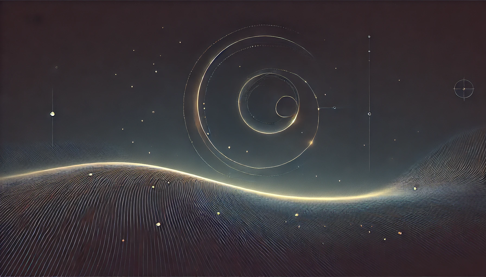

Global Time Echoes: 25-Year Analysis of CODE Precise Clock Products
Matthew Lukin Smawfield
Version: v0.19 (Cairo)
First published: 3 November 2025 · Last updated: 13 August 2026
DOI:
10.5281/zenodo.17517141
Code Availability:
github.com/matthewsmawfield/TEP-GNSS-II
Loading manuscript components...